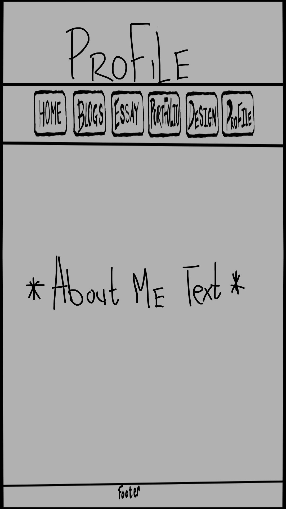

I want to have my website simple, and that’s why most of these initial wireframes will be simple. This homepage will have a header that will have my website's name; under that will be a simple navigation bar that will be easily readable for all users. I want to display any creative I have made, so I want to have it at the forefront and a description. On the side of the page, I want to include thumbnails of other projects for easy exploration.
Blog Posts Wireframe
As I mentioned, the header and navigation bar are quite simple for the ease of the users. Moving to the blog page, each post will begin with a clear title, followed by the content of the blog. This structured approach enhances readability and engagement, allowing users to effortlessly explore your blog content.
Essay Page Wireframe
Additionally, the essay page will be divided equally between the two essays, each occupying half of the page's real estate. To prevent overwhelming users with both essays upon page load, their titles will be presented as dropdowns. This approach maintains a clean and organized layout, allowing users to select and focus on the essay of their choice without feeling overloaded with information.
Design Section Wireframe
Furthermore, in the Design section, there will be an emphasis on the readability of the page. The visuals, such as wireframe images, will be incorporated alongside explanations detailing the rationale behind design choices. This ensures users can easily understand the thought process behind each concept.
Portfolio Page Wireframe
Moreover, the portfolio pages will serve as comprehensive showcases of my creative works. Each work will be accompanied by a descriptive image and a brief overview highlighting its key features. This allows users to quickly browse through my portfolio and gain insight into the range and depth of my creative output.
Mobile Iteration
When designing for mobile devices with smaller screens compared to computers, a new responsive layout must be chosen. For most pages, the layout will remain largely the same, but a few will undergo changes to enhance clarity and readability. Specifically, the homepage and the portfolio will be adjusted. The homepage will adopt a vertical layout, placing the writing pieces below the art slideshow. Similarly, the portfolio will also switch to a vertical format, following the example of the homepage. This vertical alignment will improve readability on mobile devices, creating a more user-friendly experience by making it easier to scroll through the content.
Mobile Homepage WireframeMobile Blog Page WireframeMobile Essay Page WireframeMobile Portfolio Page WireframeMobile Design Page Wireframe

Mobile Profile Page Wireframe
Final Iteration
Final Homepage Wireframe
I still aim to design a simple website, focusing on minimalist aesthetics without anything flashy or complex. My website will mainly be experimental, exploring different layouts and implementations of CSS and JavaScript. The homepage will feature a sort of advertisement that will showcase a slideshow of some of my artwork in the bottom left corner and display a few of the most recent writing pieces in the left handside. The navigation bar and heading will remain unchanged from the first iteration, retaining their simple design and placement at the top of the screen.
Final Blog Post Navigation WireframeFinal Blog Post Wireframe
This iteration of the blog posts will be slightly more complex, featuring a nested menu layout. Using the navigation bar to access the blogs will take you to a page where each blog post is presented in its own separate HTML file. This is a significant improvement over my initial idea of having a single web page with a drop-down menu displaying every blog post, which would have been confusing and cluttered. Additionally, users can now navigate between blog posts using the next and back buttons, ensuring a better flow and allowing for effortless exploration of the blog content.
Final Essay Card Layout WireframeFinal Essay Page Wireframe
In this iteration of the essay layout, I am adapting part of my original idea of having the page split into two sections for each essay. Instead of using drop-down menus, the new layout will feature two flip cards, each related to an essay. Clicking on a flip card will take the user directly to the corresponding essay.
Final Design Page Cards WireframeFinal Design Page Wireframe
This iteration of my design section will feature three cards similar to the ones I mentioned in the essay section. Working on these design cards before the essay cards provided valuable insights that I applied to the essay section. Each of the three cards will present different design elements, allowing users to easily understand the thought process behind each concept. This layout will enhance the user experience by offering a clear and interactive way to explore various design ideas.
Final Portfolio Wireframe
The layout of the portfolio page has been revamped from horizontal to vertical to assess its readability and visual appeal. This adjustment aims to enhance the user experience by presenting my creative works in a more organized and accessible manner. Like before, the portfolio page will continue to serve as a comprehensive showcase of my artistic endeavors, providing visitors with a cohesive overview of my skills and projects.